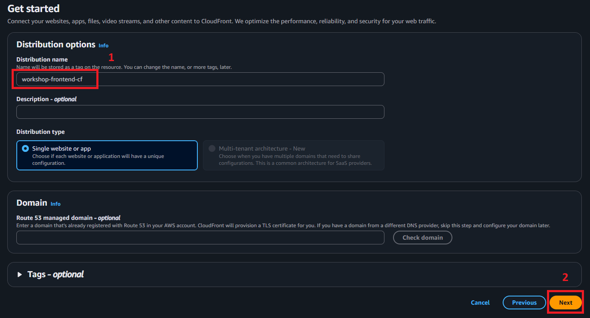
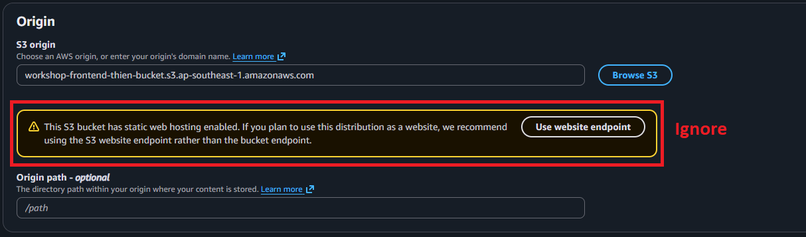
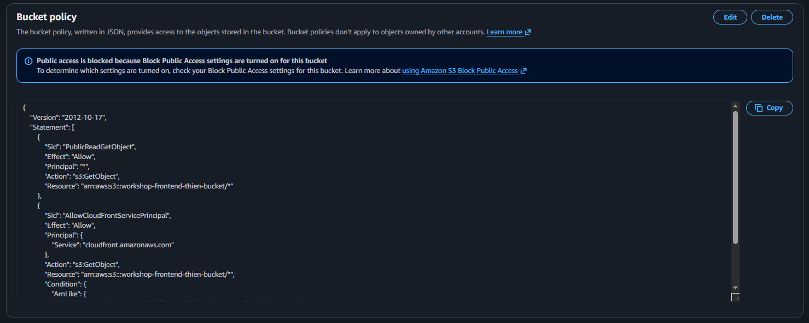
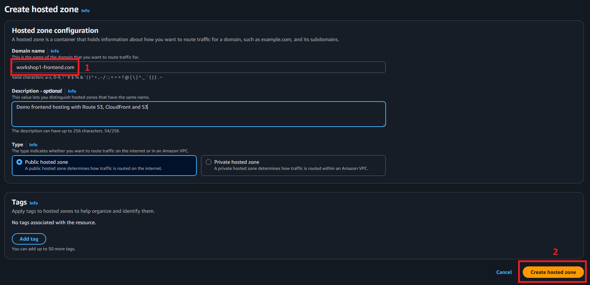
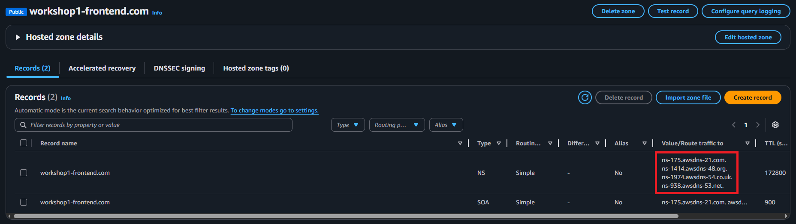

CloudFront Distribution Setup
Overview
In this section, you’ll configure Amazon CloudFront as a Content Delivery Network (CDN) in front of your S3 bucket. CloudFront will cache your content at edge locations around the world, providing faster load times for users regardless of their geographic location.
What you’ll accomplish:
- Create a CloudFront distribution
- Configure your S3 bucket as the origin
- Set up cache behaviors and optimization
- Configure SSL/TLS with HTTPS
- Update S3 bucket to restrict direct access
- Test your CloudFront distribution
Estimated time: 45 minutes
Why CloudFront?
Benefits over direct S3 access:
- Performance: Content served from edge locations near your users (200+ locations worldwide)
- Security: HTTPS support, DDoS protection, and integration with AWS WAF
- Cost: Reduced S3 data transfer costs through caching
- Scalability: Handles traffic spikes automatically
- Custom Domains: Use your own domain name with SSL certificate
Costs Considerations
Free-tier:
- $0/month
Paid-tier
- $15/month
- Overall: <$0 or <$1 if Pro (clean up immediately after finish workshop)
Step 1: Create CloudFront Distribution
1.1 Navigate to CloudFront Console
- In the AWS Console search bar, type “CloudFront”
- Click on CloudFront under Services
- Click Create distribution

1.2 Step 1: Choose a plan
- For this workshop, we will continue with the free plan.
- Click Next

1.3 Step 2: Get started
- On this step, we will configure the name of the distribution
Distribution name:
- Set as:
workshop-frontend-cf
Route 53 managed domain (optional):
-
If you already have a Route 53 managed domain, you can specify it here to use the domain instead of CloudFront’s generated domain
-
Leave the rest as default
-
Click Next

1.4 Step 3: Specify origin
Origin type:
- Select Amazon S3 as origin
Origin:
- Click on the Browse S3 button
- On the appeared modal, select the S3 bucket you created earlier in S3 Static Website Hosting tutorial. Then click Choose

- You will notice that there will be a warning appear. This is because we have configured our S3 Bucket for static website hosting. You should ignore it as we will disable S3 static website hosting in later steps

Understanding the Warning:
In S3 Static Website Hosting,
we configured the bucket for public access to enable S3 static website hosting. CloudFront has detected this
configuration. That is why when you click the Use website endpoint, the URL in the textbox will appear in this
format: [your-bucket-name].s3-website-[region].amazonaws.com, this is called the S3 website endpoint.
While S3 static website hosting works well for direct access, it requires public bucket permissions that expose
your content to anyone on the internet. A more secure approach is to keep your S3 bucket private and serve content
exclusively through CloudFront using Origin Access Control (OAC). Using OAC requires the origin URL as the bucket endpoint,
which has this format: [your-bucket-name].s3.[region].amazonaws.com
Why OAC is better:
- S3 bucket remains private (no public access)
- Content only accessible via CloudFront
- Better security posture
- Same functionality with improved protection
We’ll implement this secure configuration in the following steps by switching from the S3 website endpoint to OAC, then disabling public access to the bucket.
-
Confirm that the S3 origin URL has this format:
- Format:
[your-bucket-name].s3.[region].amazonaws.com - Example:
workshop-frontend-thien-bucket.s3.ap-southeast-1.amazonaws.com
- Format:
-
Origin path: Leave empty
Settings:
- Be sure to check Allow private S3 bucket access to CloudFront - Recommended as this will allow OAC
- Leave the rest as default
Click Next

1.5 Step 4: Enable security
By default, Web Application Firewall (WAF) is enabled. You should leave the settings in this step as they are. We will configure WAF in more details in later part of this workshop.
Click Next

1.6 Step 5: Review and create
- Review your CloudFront settings
- Click Create distribution when you are ready
- You will be redirected to the results page
⏱️ Wait Time: CloudFront distribution deployment takes 5-15 minutes. While waiting, let’s proceed with configuring our S3 Bucket to support OAC

Step 2: Secure Your S3 Bucket (Restrict Direct Access)
Now that CloudFront is serving your content, let’s prevent users from bypassing CloudFront and accessing S3 directly.
2.1 Navigate to Your S3 Bucket
- Go to S3 console
- Click on your bucket name
- Go to Permissions tab
2.2 Block Public Access
- Scroll to Block public access (bucket settings)
- Click Edit
- Check all four options:
- Block public access to buckets and objects granted through new access control lists (ACLs)
- Block public access to buckets and objects granted through any access control lists (ACLs)
- Block public access to buckets and objects granted through new public bucket or access point policies
- Block public access to buckets and objects granted through any public bucket or access point policies
- Click Save changes
- Type
confirmwhen prompted - Click Confirm

2.3 Update Bucket Policy
- Scroll to Bucket policy
- You will notice that permissions for CloudFront-only access policy was automatically created. Those permissions allow CloudFront to access our S3 Bucket

-
We should now remove the PublicReadGetObject permission we created in S3 Static Website Hosting
-
Click Edit
-
Delete this statement:
{
"Sid": "PublicReadGetObject",
"Effect": "Allow",
"Principal": "*",
"Action": "s3:GetObject",
"Resource": "arn:aws:s3:::[your-bucket-name]/*"
}
- Click Save changes

2.4 Disable S3 Static Website Hosting
- From your Bucket, go to Properties tab
- Scroll down to Static website hosting section, click Edit
- Under Static website hosting, check Disable
- Click Save changes

With this change, we will no longer be able to access our website via S3 website endpoint in S3 Static Website Hosting
Step 3: View CloudFront Origin Settings (Optional)
If you want, you can view CloudFront’s origin settings to better understand how CloudFront connect to our S3 Bucket
- Go to CloudFront console -> Distributions
- Select your newly-created distribution in the list
- Go to Origins tab
- Under Origins, select your origin S3 bucket. Then click Edit

- In the next screen, you will see the Origin’s settings. There are several notable settings:
- Origin domain: your S3 Bucket Endpoint
- Origin access: access method to the origin. Here you should see the option Origin access control settings (recommended) selected
- Origin access control: you should see an OAC created by CloudFront pre-selected. It should have name follow this format:
oac-[your-bucket-name].s3.[region]-[random-string]
You may also see the message “You must allow access to CloudFront using this policy statement. Learn more about giving CloudFront permission to access the S3 bucket”. This message means that you must add required policy statements in your S3 Bucket for CloudFront to access the S3 bucket you created in S3 Static Website Hosting tutorial to host the sample website. But as of 26/11/2025, in the CloudFront creation process, particularly 1.4 Step 3: Specify origin, we selected Allow private S3 bucket access to CloudFront - Recommended. This option will automatically insert required policy statements for CloudFront to access the S3 bucket, as we already saw in 2.3 Update Bucket Policy. So you can ignore this message.
Step 3: Test Your CloudFront Distribution
3.1 Access via CloudFront Domain
- Go back to your Distribution’s page, on the top panel you will see your website’s endpoint under Distribution domain name. You can access this endpoint to go to you website

- Open a new browser tab
- Navigate to:
https://[your-cloudfront-domain].cloudfront.net- Example:
https://d1234abcd.cloudfront.net
- Example:
- Note: Use HTTPS, not HTTP
Expected result:
- Your website loads successfully
- Browser shows connection is secure (HTTPS)
- Content loads from CloudFront, not S3 directly

3.2 Verify Direct S3 Access is Blocked
Try accessing your old S3 website endpoint:
- Example:
http://workshop-frontend-john-a1b2c3.s3-website-us-east-1.amazonaws.com
Expected result:
- 404 Not Found error
- This confirms S3 is now protected, the S3 Website Endpoint is no longer exists and our website is now only accessible via CloudFront

3.3 Test HTTPS Redirect
- Try accessing with HTTP:
http://[your-cloudfront-domain].cloudfront.net
Expected result:
- Automatically redirects to HTTPS
- Browser URL changes to
https://...
3.4 Check Response Headers
- Open browser Developer Tools (F12)
- Go to Network tab
- Refresh the page
- Click on the first request (usually the document)
- Look at Response Headers
You should see:
x-amz-cf-id: CloudFront request IDx-cache: Shows cache status (Miss from cloudfront, Hit from cloudfront, etc.)age: Time in seconds the object has been in the cache

3.5 Test From Different Locations (Optional)
Use an online tool to test your site from multiple global locations:
Tools:
- https://www.webpagetest.org/
- https://tools.pingdom.com/
- https://www.dotcom-tools.com/website-speed-test
What to look for:
- Fast load times from various geographic locations
- CloudFront serving from nearby edge locations
Step 4: Configure Custom Domain with Route 53 (Optional)
Skip if you’re not using a custom domain.
4.1 Update DNS Records
If the domain name is purchased from an external DNS provider:
- Go to Route 53 console
- Click on your hosted zone
- Click Create hosted zone
- Configure:
- Domain name: your domain name
- Type: Public hosted zone
- Click Create hosted zone

- You will be redirected to the hosted zone page. Under Records, note the NS type nameservers (total 4 of them)

- Go to your external DNS provider. Find the Nameservers settings, then add 4 nameservers you got from Route 53 earlier
- Wait up to 24 hours for changes to propagate. In the meantime, let’s set up CloudFront to use the custom domain
- Go to your newly-created distribution page, under Alternate domain names, click Add domain
- Under Domains to serve, input the domain name that you purchased. Click Next

- On the next screen, click on Create certificate. A new SSL certificate will be created for you


- On the next screen, review changes then click Add domains
- Now you can access the sample website using the custom domain
4.2 Test Custom Domain
- Wait 5-10 minutes for DNS propagation
- Navigate to:
https://www.yourdomain.com
Expected result:
- Your website loads via your custom domain
- HTTPS works with your SSL certificate
- No certificate warnings
4.3 Verify DNS Propagation
Use a DNS checker tool:
- https://dnschecker.org/
- Enter your domain name
- Check that it resolves to your CloudFront distribution
Step 5: Cache Invalidation
When you update your website, CloudFront caches the old version. Learn how to clear the cache.
5.1 Create an Invalidation
- Go to CloudFront console
- Click on your distribution ID
- Go to Invalidations tab
- Click Create invalidation
5.2 Specify Paths to Invalidate
Object paths:
For all files:
/*
For specific files:
/index.html
/css/*
/js/*
For a single file:
/index.html
- Click Create invalidation
Note: Invalidations usually complete in 1-2 minutes
5.3 Invalidation Costs
- First 1,000 invalidation paths per month: FREE
- After that: $0.005 per path
Best practices:
- Use versioned filenames (e.g.,
main.abc123.js) to avoid frequent invalidations - Invalidate only specific files when possible
- For complete rebuilds,
/*is acceptable
Step 6: Performance Verification
6.1 Test Loading Speed
- Open your website in an incognito/private window
- Open Developer Tools (F12)
- Go to Network tab
- Refresh the page
- Check the DOMContentLoaded and Load times at the bottom
Good benchmarks:
- DOMContentLoaded: < 1 second
- Full page load: < 2 seconds
- First Contentful Paint: < 1 second

6.2 Check CloudFront Cache Hit Ratio
- Go to CloudFront console
- Click on your distribution
- Go to Monitoring tab
- Check the Cache hit rate graph
Target: 80%+ cache hit rate after initial traffic

6.3 Verify Compression
- In Developer Tools Network tab
- Click on a CSS or JS file request
- Look at Response Headers
- Verify
content-encoding: gziporcontent-encoding: br(brotli)
File size comparison:
- Without compression: ~100 KB
- With compression: ~25 KB (75% reduction)
Troubleshooting
Issue: CloudFront serves old/cached content after update
Solution:
- Create a cache invalidation for affected paths
- Or, implement cache-busting with versioned filenames
- Verify your build process generates unique filenames
Issue: “The request could not be satisfied” error
Causes:
- CloudFront can’t reach S3 origin
- Origin configuration incorrect
- S3 bucket policy blocking CloudFront
Solution:
- Check CloudFront origin settings point to correct S3 endpoint
- Verify S3 bucket policy allows CloudFront access
- Ensure Origin Access Control is configured correctly
- Check S3 bucket exists and has content
Issue: SSL certificate not showing in CloudFront
Solution:
- Verify certificate is in us-east-1 region
- Check certificate status is Issued (not Pending)
- Wait a few minutes and refresh the CloudFront page
- Ensure certificate covers the domains in CNAME settings
Issue: Custom domain not working
Solution:
- Verify DNS records are correct (CNAME pointing to CloudFront)
- Check DNS propagation with dnschecker.org
- Ensure SSL certificate includes your custom domain
- Wait up to 48 hours for full DNS propagation (usually much faster)
Issue: “Access Denied” when accessing via CloudFront
Solution:
- Check S3 bucket policy includes correct distribution ARN
- Verify Origin Access Control is created and associated
- Ensure bucket policy allows CloudFront service principal
- Try creating a new cache invalidation
Issue: Slow initial load, then fast subsequent loads
This is expected behavior:
- First request: Cache miss, CloudFront fetches from S3 (slower)
- Subsequent requests: Cache hit, served from edge (fast)
- This is normal and improves with more traffic
Summary
Congratulations! You’ve successfully:
- Created a CloudFront distribution
- Configured S3 as the origin
- Enabled HTTPS with SSL/TLS
- Secured S3 to only allow CloudFront access
- (Optional) Set up a custom domain
- Tested cache performance
- Learned cache invalidation
What You’ve Achieved
Your website now has:
- Global Distribution: Served from 200+ edge locations worldwide
- HTTPS Security: Encrypted traffic with SSL/TLS
- Better Performance: Reduced latency through caching
- DDoS Protection: Built-in AWS Shield Standard
- Cost Optimization: Reduced S3 data transfer costs
- Scalability: Automatic handling of traffic spikes
Architecture So Far
Internet Users
↓
CloudFront (HTTPS)
↓
S3 Bucket (Private)
What’s Next
In Part 3, we’ll configure AWS WAF to protect your application from:
- SQL injection attacks
- Cross-site scripting (XSS)
- Bot traffic and scraping
- Geographic restrictions
- Rate limiting
Useful AWS CLI Commands:
# Invalidate entire cache
aws cloudfront create-invalidation \
--distribution-id YOUR-DISTRIBUTION-ID \
--paths "/*"
# Invalidate specific paths
aws cloudfront create-invalidation \
--distribution-id YOUR-DISTRIBUTION-ID \
--paths "/index.html" " /css/*"
# Get distribution status
aws cloudfront get-distribution \
--id YOUR-DISTRIBUTION-ID \
--query "Distribution.Status"
# Update website and invalidate
cd frontend
npm run build
aws s3 sync ./build/ s3://YOUR-BUCKET-NAME/ --delete
aws cloudfront create-invalidation \
--distribution-id YOUR-DISTRIBUTION-ID \
--paths "/*"
Ready to continue? Let’s proceed to Part 3: AWS WAF Configuration to add security protection!